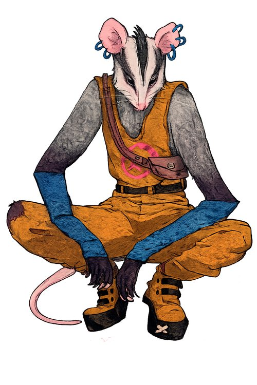
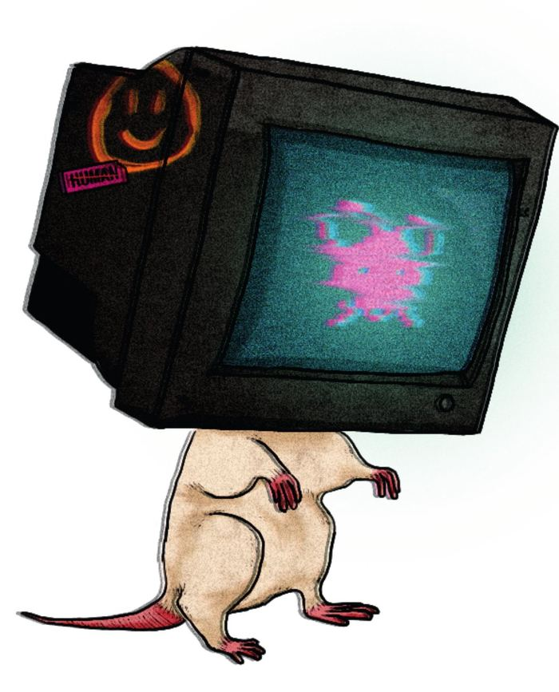

o que tem nesta página
o que é mestrar
hexaverso
Mestrar Hexaverso não é apresentar um mapa e esperar que os jogadores se movam. É regular atmosfera, dar ritmo ao estranho, decidir quando apertar e quando aliviar, e fazer com que o mundo responda sem transformar a campanha em sermão.
Vocês são dois. Essa é a primeira coisa a entender — e talvez a mais libertadora. O mestre principal conduz a ficção, interpreta NPCs, apresenta perigos, descreve consequências e decide quando a ficção exige teste. O mestre-auxiliar observa os jogadores, registra o que o grupo está produzindo como unidade, opera o Medidor de Integridade e organiza as devolutivas ao final.
Essa divisão não enfraquece a mestria — ela a torna mais precisa. O principal não deve tentar preencher fichas durante a cena; o auxiliar não deve disputar o foco narrativo. Antes da sessão, vocês alinham os momentos críticos prováveis. Durante a sessão, se comunicam com sinais breves. Depois da sessão, cruzam narrativa e registro para o follow-up. É coreografia.
Uma boa forma de pensar: o mestre principal é narrador; o mestre-auxiliar é cientista comportamental. Os dois servem à mesma mesa, mas a partir de bancadas diferentes. Se apenas um trabalho acontece bem, o jogo funciona de modo reduzido. Quando os dois trabalhos acontecem juntos, o Hexaverso se torna o que ele pretende ser: narrativa + tecnologia comportamental + aprendizagem incorporada.
como uma
sessão acontece
Toda sessão tem uma forma. Quando vocês sabem a forma, param de improvisar o que não precisa ser improvisado — e sobra mais atenção para o que importa.
setup · antes da mesa
Mestre principal revisa o capítulo e lista 3 a 5 momentos críticos prováveis (cenas onde o grupo vai precisar coordenar algo). Mestre-auxiliar prepara a ficha de registro do capítulo e confirma o valor de abertura do Medidor. Os dois alinham por 5 minutos.
abertura · primeiros 10 min
Principal faz a ponte com a sessão anterior e estabelece onde o grupo está — fisicamente, emocionalmente, socialmente. Introduz o gancho inicial: algo pequeno, imediato, que os personagens notam no ambiente. Auxiliar observa em silêncio nesta fase.
cenas · o jogo em si
Cenas se sucedem em blocos de 15 a 30 minutos. Principal alterna pressão e respiração. Quando a ação é incerta e pode mudar a cena, pede teste (1d6 roll-under). Quando a cena se resolve pela ficção, narra direto. Auxiliar registra quando o grupo produz algo como unidade — não cada rolagem.
clímax · o momento crítico
Toda sessão tem pelo menos um momento onde o grupo precisa coordenar uma resposta difícil. Principal cria a situação; auxiliar registra o culturante emergente. Este é o momento em que o Medidor geralmente se move.
fechamento · o mundo responde
Principal fecha com uma consequência que o grupo sente — não uma mensagem moral, uma reação do mundo. Descoberta, cliffhanger, vitória com custo, retorno de um NPC. Abre espaço para anotações nos Companion Logs.
follow-up · depois
Auxiliar consolida o registro. Nos capítulos marcados, conduz uma discussão gamificada com o grupo para generalizar o que foi aprendido. Entrega novas quests aos jogadores para serem feitas entre sessões.
o que levar
o que preparar
Os dois chegam preparados de jeitos diferentes. Cada um com o seu kit.
bancada
do narrador
- Capítulo da sessão revisado
- 3 a 5 momentos críticos identificados
- NPCs principais com voz/gesto ensaiado
- Cenário principal e dois de reserva
- Relógio dramático (quanto tempo até X?)
- Ficha de sessão do mestre principal
- Um d6 de mesa (ainda que jogadores tragam os seus)
- Bloco para notas rápidas
bancada
do observador
- Ficha de registro do capítulo impressa
- Valor de abertura do Medidor confirmado
- Escala de impacto (-3 a +3) à vista
- Quests personalizadas para cada jogador
- Canetas de cores diferentes
- Caderno de Follow-up unificado
- Combinado silencioso com o principal (sinal para pausa ou intervenção)
- Postura discreta — observação não compete com ficção
conduzir ficção
que ensina.
Seu trabalho é fazer o mundo parecer vivo. Não um tabuleiro imóvel com encontros programados — uma sociedade. Se o grupo protege um bairro, isso circula. Se humilha alguém pequeno, isso retorna. Se ajuda oficinas, equipamentos melhoram; se ignora sofrimento, outro agente preenche esse espaço. O mundo reage.
Você não precisa explicar que uma escolha foi cruel. Basta fazer a cidade reagir. Punições melhores empurram a história para um lugar mais difícil em vez de simplesmente desligá-la. Tempo perdido, barulho, inimigo extra, rota fechada, desconfiança social, queda de moral. Isso funciona melhor do que castigos que travam a mesa.
os seis vértices · como convocar cada um
Cada personagem representa um processo do Hexaflex. Seu trabalho como principal é desenhar cenas que convocam esses processos — não forçar o jogador a atuar o conceito, mas criar situações onde o conceito apareça naturalmente.
Cena: No Mercado Velho, um grupo da milícia começa a cercar um saruê chamado Flik, com intenção clara de humilhá-lo na frente da plateia.
O que convocar: esta cena convoca ação comprometida (Micca) de forma mais direta. Mas pode convocar valores (Elan — o que importa defender?), aceitação (Poppy — a violência vai acontecer, como estar ali?), e desfusão (Nixx — "não adianta, são muitos" é pensamento ou fato?).
A cena boa não obriga um vértice específico. Ela dá espaço para vários. O auxiliar depois registra quais apareceram.
quando pedir teste — quando narrar direto
Regra simples: só peça teste quando o resultado puder mudar a cena. Se a ação é trivial (abrir uma porta destrancada, caminhar pela rua), narre direto. Se a ação não pode falhar (o personagem respira, olha para cima), narre direto. Teste é para momentos onde a incerteza importa.
Dentro dos momentos que importam, escolha o atributo pelo tipo de desafio — não pelo que o jogador diz que está fazendo:
npcs essenciais

Flik
Viktor

Data-Rattus
Unhudo
observar cultura
em ato.
Seu trabalho não é narrar no lugar do principal nem julgar moralmente os jogadores. É observar a qualidade processual da interação entre eles e registrar de modo fidedigno. Você presta atenção em cooperação, omissão, proteção de terceiros, reparação de erro, fragmentação interna, escalada coercitiva desnecessária, apoio a vulneráveis, persistência sob pressão.
Você também é um personagem: o Estagiário. O único humano que testemunhou a fenda dimensional e que consegue observar o Hexaverso através de um computador antigo na biblioteca da universidade. Ninguém acreditou nele. Então ele parou de contar e começou a anotar — como faria um estagiário bem treinado num laboratório de ciência do comportamento.
como identificar uma cce em cena
CCE = Contingência Comportamental Entrelaçada. Em linguagem de mesa: é quando diferentes jogadores emitem respostas complementares que se encaixam funcionalmente e juntas produzem um efeito comum. Nenhuma resposta isolada define a potência da cena. O que importa é a articulação entre elas.
Cena: três milicianos cercam Flik no beco do Mercado Velho.
Respostas: Micca se interpõe · Poppy fala alto para a plateia · Bree observa quem está quem no grupo hostil · Elan sustenta postura firme · Nixx planeja rota de saída se precisar · Waggu acalma um dos milicianos mais jovens.
Isso é uma CCE. Seis respostas diferentes que juntas produzem algo que nenhuma delas produziria sozinha: uma contenção coordenada de violência sem escalada.
Sua tarefa é nomear o produto agregado (o efeito que a coordenação produziu no mundo) e identificar o culturante predominante (o tipo de padrão coletivo que emergiu). No exemplo acima: produto agregado = "humilhação pública interrompida com contenção protetiva"; culturante = "defesa de terceiro + cooperação orientada por valores".
operar o medidor de integridade
O Medidor é uma variável oculta, de uso exclusivo seu. Ele representa o estado sociocultural do mundo — o quanto o mundo permanece íntegro, cooperativo, reparável, estável. Não é uma barra moral. Um grupo brilhante individualmente pode ter baixa integridade se resolve tudo por humilhação, coerção ou fragmentação.
O índice começa alto e é atualizado com parcimônia. Não muda a cada fala. Muda quando a coordenação do grupo produz um efeito social relevante — tipicamente no clímax de cada cena importante.
escala prática do medidor
- +3efeito fortemente protetivo, cooperativo ou reparador
- +2efeito claramente favorável ao tecido social
- +1efeito levemente favorável
- 0efeito misto, ambíguo ou sem mudança relevante
- −1efeito levemente deletério
- −2efeito claramente deletério
- −3efeito fortemente coercitivo, excludente ou escalatório
Três princípios operacionais que evitam erros comuns:
(1) O índice reflete o produto agregado da cena inteira — não apenas a primeira resposta emitida. Se o grupo começa mal e repara no meio, o saldo funcional muda.
(2) Soluções eficazes no curto prazo podem ser culturalmente ruins se dependem de humilhação, coerção ou exclusão. Sucesso tático não é integridade.
(3) O mesmo ato topograficamente parecido pode ter impacto diferente conforme o entrelaçamento em que ocorre. "Proteger alguém" vale diferente se o grupo coordenou ou se apenas um agiu sozinho.
ficha de registro · preview
Sua ferramenta principal. Uma ficha por cena crítica. O registro precisa ser fidedigno — não o mais bonito nem o que confirma sua hipótese favorita. É o que descreve com precisão suficiente o que aconteceu, para que outra pessoa possa compreender a lógica da classificação.
Ficha completa disponível para download em /downloads.
fechar a sessão,
abrir a próxima
O follow-up não é avaliação. É um espaço organizado para transformar o que aconteceu na mesa em algo que atravessa.
Ao final de cada capítulo (e em pontos marcados da campanha), o mestre-auxiliar conduz uma discussão gamificada com o grupo. Não é sermão, não é aula. É um espaço curto e estruturado onde vocês pegam as cenas da sessão e pensam com o grupo no que aquilo significa para fora da ficção.
O follow-up tem três funções: reconstruir o que aconteceu (para fixar), generalizar (conectar com a vida de fora), e consequenciar (entregar quests novas baseadas no que cada jogador precisa desenvolver).
o kit
dos mestres
As fichas, cadernos e referências que vocês vão usar. Tudo no /downloads.
agora
sentem à mesa.
Este guia não substitui jogar. Ele te prepara para a primeira sessão. Depois vocês voltam aqui com dúvidas específicas, e o guia começa a fazer sentido de verdade.
◆ quick play ▸ downloads